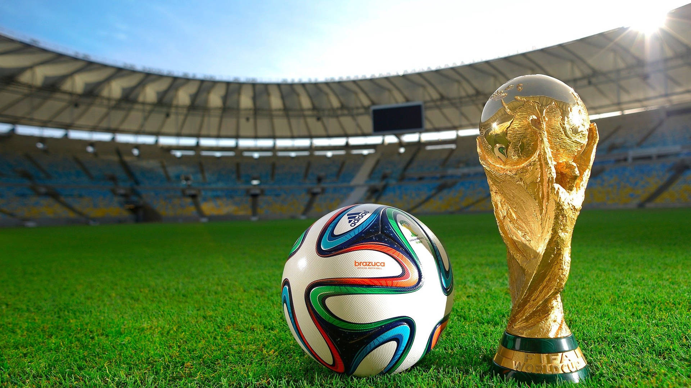

Every few years, the World Cup reminds us that sports can be so much bigger than the game itself. Suddenly, everyone has a team, a jersey, a flag, a family group chat going off, and a reason to gather around the TV like something historic might happen at any second. Even people who "don't watch soccer" somehow end up watching soccer.
What makes it feel so special is the culture around it. The music, the food, the watch parties, the dramatic reactions, the national pride, the outfits, the heartbreak, the celebration — it all turns into this shared global event that feels emotional, chaotic, and beautiful at the same time. For Latino families especially, soccer has a way of becoming background music to childhood, summer afternoons, loud living rooms, and everyone yelling at the screen like the players can hear us.
There's also something really intimate about the way soccer gets passed down. You don't always remember the exact score, but you remember where you were watching, who was yelling, what food was on the table, and the feeling in the room when a goal almost happened. The World Cup has a way of turning ordinary moments into core memories — a living room becomes a stadium, a jersey becomes a love letter, and a single game can make a whole family feel like they're part of something bigger.
It's also one of the few events that makes the world feel both massive and small at the same time. Different languages, different countries, different histories — all colliding on one field. And for a few weeks, the drama is universal: hope, nerves, pride, disappointment, celebration. You don't need to understand every rule to understand what it means when someone's country scores. That kind of emotion translates instantly.
That's why the World Cup feels less like a tournament and more like a season of life. It gives people something to root for, something to talk about, and something to feel connected to. Win or lose, it brings out the kind of passion that makes everyday life feel a little more alive — and honestly, that's very chévere.
Until next week — stay chévere